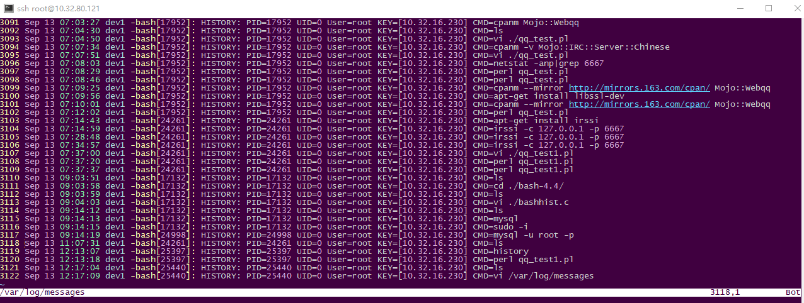
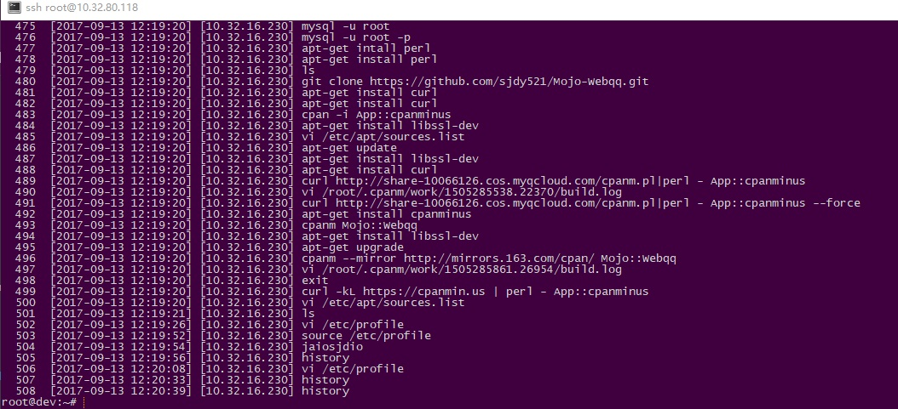

最终效果： log记录: /var/log/messages

history记录: history

首先去gnu下载最新版的bash源码，本次采用的是bash-4.4版本
编辑config-top.h文件，主要关注以下两点: 一.103行，取消
#define SSH_SOURCE_BASHRC
的注释 二.116行，取消
#define SYSLOG_HISTORY
的注释
然后编辑bashhist.c源码文件，主要关注750行->800行。 未经修改的原文件：
void
bash_syslog_history (line)
const char *line;
{
char trunc[SYSLOG_MAXLEN];
static int first = 1;
if (first)
{
openlog (shell_name, OPENLOG_OPTS, SYSLOG_FACILITY);
first = 0;
}
if (strlen(line) < SYSLOG_MAXLEN)
syslog (SYSLOG_FACILITY|SYSLOG_LEVEL, "HISTORY: PID=%d UID=%d %s", getpid(), current_user.uid, line);
else
{
strncpy (trunc, line, SYSLOG_MAXLEN);
trunc[SYSLOG_MAXLEN - 1] = '\0';
syslog (SYSLOG_FACILITY|SYSLOG_LEVEL, "HISTORY (TRUNCATED): PID=%d UID=%d %s", getpid(), current_user.uid, trunc);
}
}
这里主要就是用来修改syslog服务的相关记录项，可以增删功能。 修改后的代码：
bash_syslog_history (line)
const char *line;
{
char trunc[SYSLOG_MAXLEN];
static int first = 1;
FILE *fp;
char buffer[LEN_p];
fp=popen("echo \"[`who am i 2>/dev/null| awk '{print $NF}'|sed -e 's/ [()]//g'|sed 's/(//g'|sed 's/)//g'`]\"","r");
fgets(buffer,sizeof(buffer),fp);
int ii = LEN_p-1;
while(ii>=0 && buffer[ii]==' ')
ii--;
buffer[ii] = '\0';
char buffer_test[LEN_p];
int iii = 0;
int jjj = 0;
while(buffer[iii]!='\0'){
if(buffer[iii]<32)
iii++;
else
buffer_test[jjj++]=buffer[iii++];
}
buffer_test[jjj]='\0';
//const char *buffer_test;
//buffer_test = buffer;
pclose(fp);
//buffer_test = getenv("NAME_OF_KEY");
if (first)
{
openlog (shell_name, OPENLOG_OPTS, SYSLOG_FACILITY);
first = 0;
}
if (strlen(line) < SYSLOG_MAXLEN)
syslog (SYSLOG_FACILITY|SYSLOG_LEVEL, "HISTORY: PID=%d UID=%d User=%s KEY=%s CMD=%s", getpid(), current_user.uid, current_user.user_name, buffer_test,line);
else
{
strncpy (trunc, line, SYSLOG_MAXLEN);
trunc[SYSLOG_MAXLEN - 1] = '\0';
syslog (SYSLOG_FACILITY|SYSLOG_LEVEL, "HISTORY (TRUNCATED): PID=%d UID=%d User=%s KEY=%s CMD=%s", getpid(), current_user.uid, current_user.user_name, buffer_test,trunc);
}
}
这里既是通过修改源码的方法添加了审计username和IP的功能，如需要加入其他任何功能直接在这里写C代码就可以了。 然后，有唯一一个需要注意的要点，rsyslog处理所有ascii<32的特殊字符都会显示#012无法识别，所以无论用rsyslog记录什么，都需要把ascii<32的特殊字符删除掉 然后编译，替换/bin/bash不再多说
最后，可以编辑/etc/profile，修改环境变量，添加如下三行常用配置：
export HISTTIMEFORMAT="[%Y-%m-%d %H:%M:%S] [`who am i 2>/dev/null| awk '{print $NF}'|sed -e 's/[ ()]//g'`] "
export HISTSIZE="999999"
readonly PROMPT_COMMAND="history -a"
第一行定义history格式 第二行第一history最大存储 第三行让所有用户操作都能即时写入history中，而不是退出session时再写入(如果同时又几个用户登录，可能导致history事件错乱)
历史评论 (3 条)
以下评论来自原 WordPress 站点，仅作存档展示。